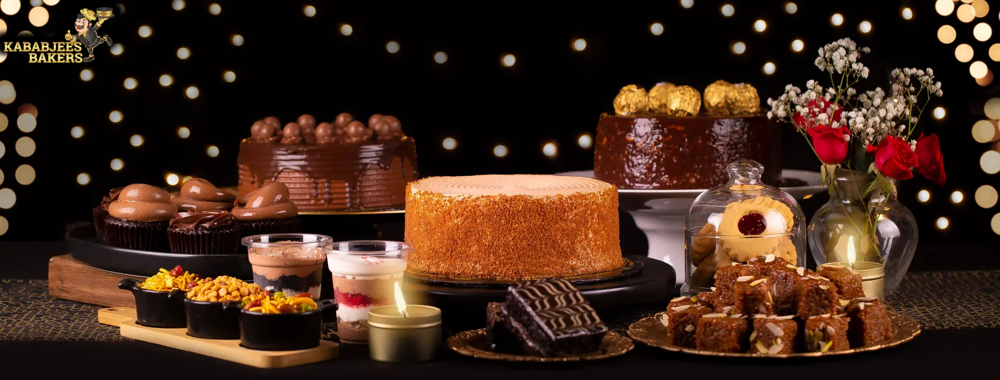

BLOG
|  | |
| UNCATEGORIZED | BAKERS |
From Breakfast |
Discover the
|
A Sweet Start in Karachi Kababjees Bakers
is renowned in Karachi for offering
a delightful array of bakery items,
establishing itself as a paradise for sweet
and savory food lovers. Whether it’s the
beginning of your day or you’re looking for
something to satisfy your… |
A Haven for Bakery Lovers Kababjees
Bakers, a top destination for delectable
bakery delights in Karachi, stands out as a
haven for those who cherish freshly
bakedhness, has become a go-to spot for
bakery enthusiasts across Karachi. |
| BAKERS | |
Indulge in Freshly
|
|
A Haven for Bakery Lovers Kababjees
Bakers in Karachi is a top destination
for those seeking delectable bakery delights.
Renowned for using high-quality
ingredients and maintaining the utmost
standards of taste and freshness,
Kababjees Bakers has become a go-to spot
for bakery
|